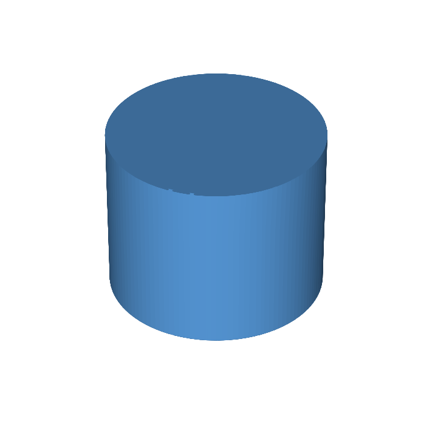
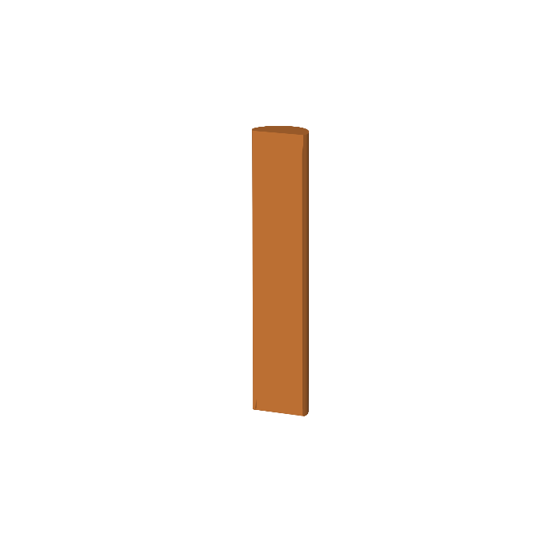
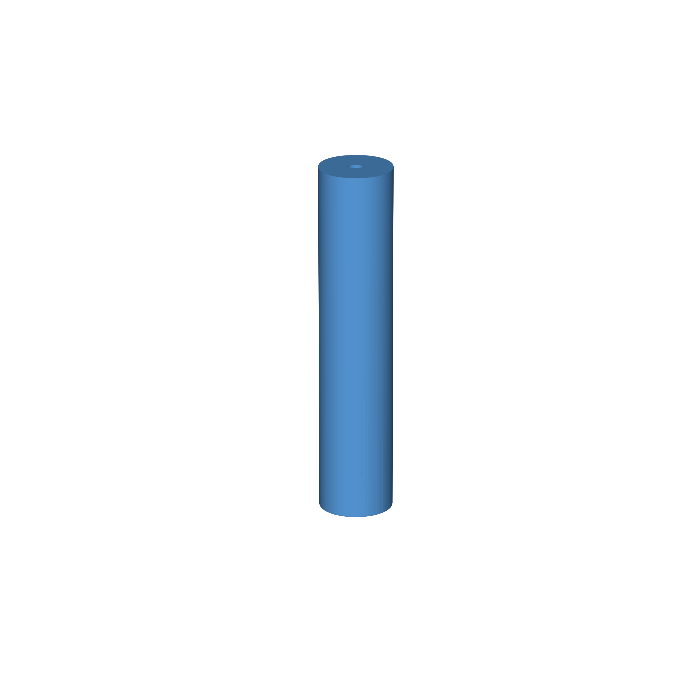
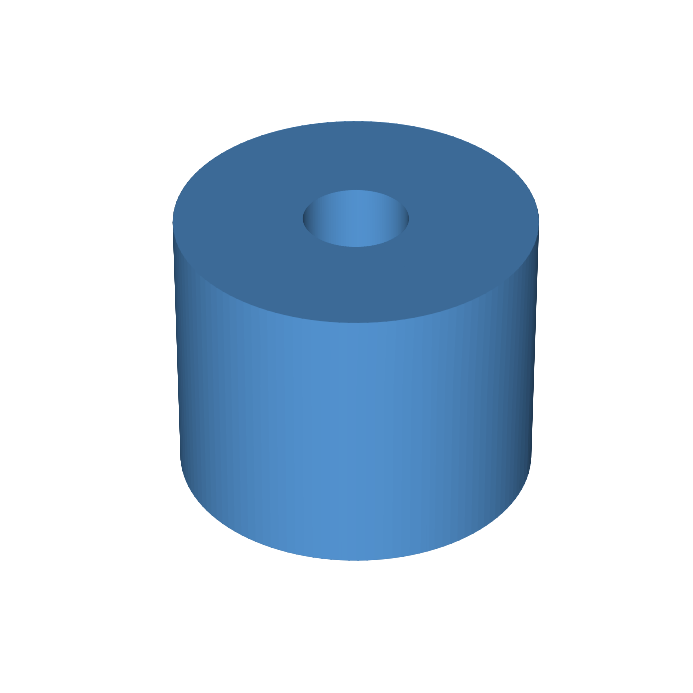
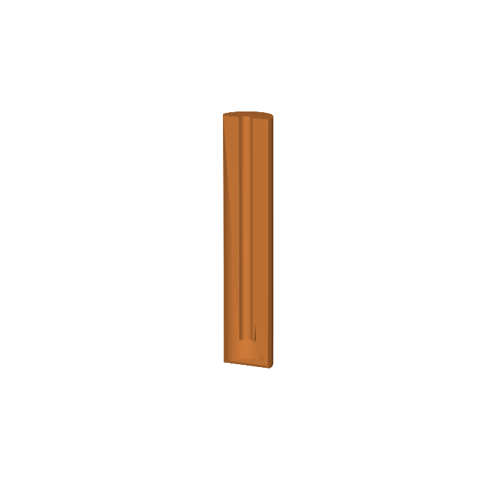
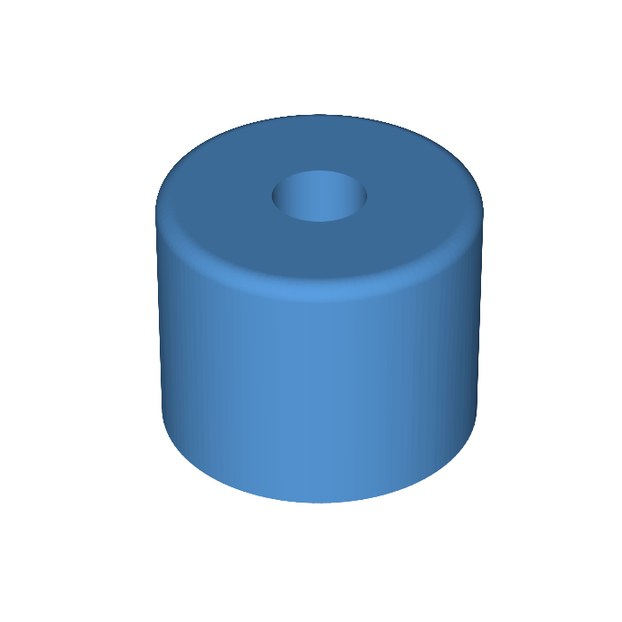
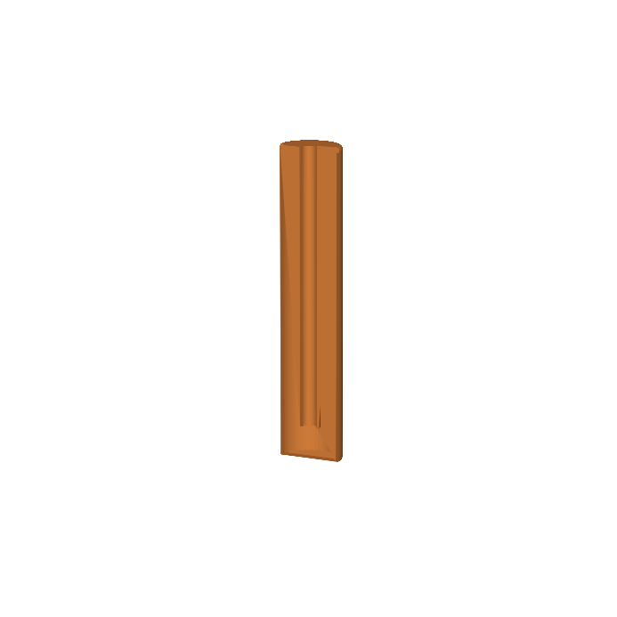

01 · extrude


- Type
- Solid
- Valid
- True
- Solids
- 1
- Volume
- 251327.412 mm³
This page runs the real pytest cases and renders the OCCT geometry they verify.







def test_section_3_geometry():
pocket = build(POCKET)
assert pocket.ShapeType == "Solid"
assert pocket.isValid()
assert pocket.Volume == approx(pi * 20**2 * 200 - pi * 6**2 * 180)
fillet = build(FULL)
assert fillet.ShapeType == "Solid"
assert fillet.isValid()
assert len(fillet.Solids) == 1
assert 0 < fillet.Volume < pocket.Volume
.. [100%] 2 passed in 0.09s
sk1 = sketch(plane=XY, circle=[center=origin, r=20]); body = extrude(profile=sk1, length=200); hole1 = pocket(on=body.face_top, circle=[center=body.axis, r=6], depth=180); edge1 = fillet(on=body.edge_top, radius=2);
Each stage is also exported as STL for independent inspection in FreeCAD or another CAD viewer.